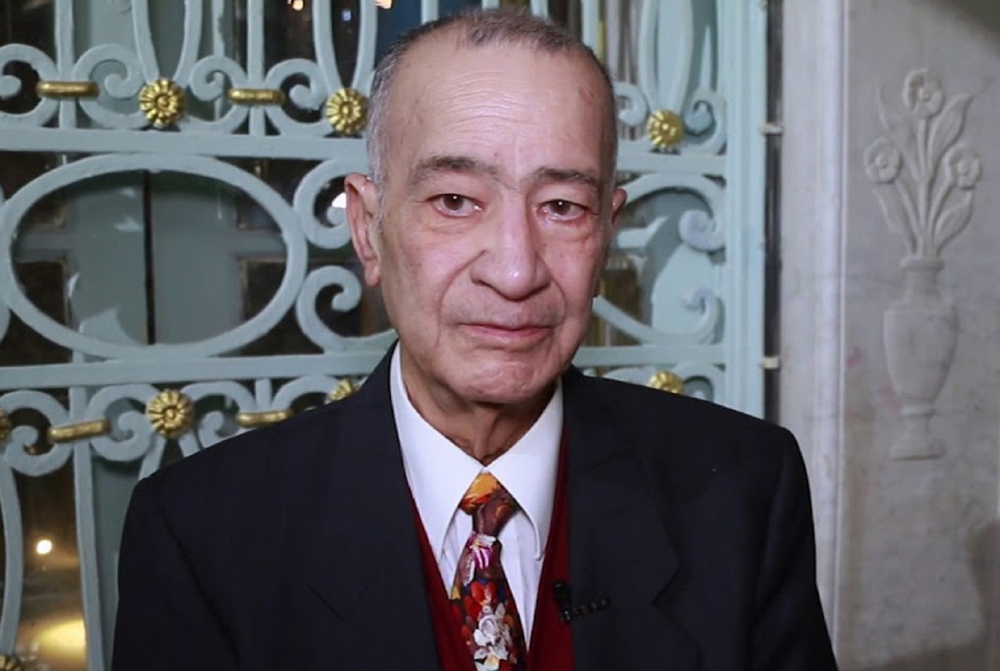
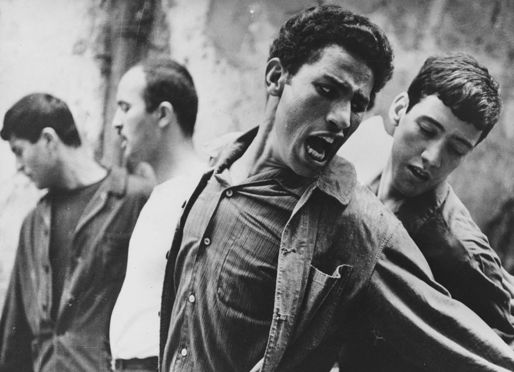

Pourquoi l’homme arabe est-il, dans le regard colonial, à la fois désiré et craint ?
L’hypothèse : la colonie le construit en même temps comme objet de fantasme et comme danger sexuel. Ce sont les deux plateaux d’une seule balance, truquée de telle sorte qu’aucun des deux ne le déclare jamais innocent.

Le corps habillé
Ces hommes posent en officiers : vêtus, décorés, inscrits dans une fonction. L’image documente un statut. Sexualiser le colonisé, le réduire à un corps et à un sexe, c’est effacer le notable et le citoyen possible : il ne reste qu’une enveloppe. Une fois l’homme réduit à un corps qu’on croit dangereux, on peut le surveiller sans avoir à se justifier. Le fantasme prépare la police.
L’Orient suggérait non seulement la fécondité mais une promesse (et une menace) sexuelle, une sensualité inépuisable, un désir sans limite, de profondes énergies génératrices.
Comment un homme devient un corps
Le nègre est un objet phobogène, anxiogène.
L’objet phobogène
Un objet qui produit de l’angoisse rien qu’à être perçu. Une peur qu’aucun danger réel n’explique.
Nègre égale biologique, sexe, fort, sportif, puissant, boxeur, sauvage, animal, diable, péché.
La réduction au biologique
Du corps sportif au diable : le désir et la damnation tiennent dans la même respiration.
Le nègre a une puissance sexuelle hallucinante. C’est bien le terme : il faut que cette puissance soit hallucinante.
La puissance hallucinée
Le colon a besoin de prêter cette puissance, quitte à l’halluciner. Le fantasme est son besoin, pas une observation.
On n’aperçoit plus le nègre, mais un membre.
L’homme éclipsé
L’histoire, la parole, le statut disparaissent derrière un seul organe. Un sujet réduit à un sexe.
La double contrainte
Désiré parce que dangereux, dangereux parce que désiré. Une injonction dont on ne sort pas.
Le fantasme appartient au colon
Quand un Arabe théorise ce corps
« L’islam ne cherche nullement à déprécier, encore moins à nier le sexuel. Il lui confère au contraire un rôle grandiose … telle que la sexualité se trouve déculpabilisée. »

La France castrée
L’homme arabe hyper viril devient l’épouvantail d’une France envahie par l’immigration. La défaite coloniale relue comme une défaite de la virilité française.
Le révolutionnaire viril
Au même moment, une partie de la nouvelle gauche réérotise ce même corps en résistant à l’impérialisme. Deux camps qui s’opposent sur tout, sauf sur un point : aucun ne le laisse tranquille.

Désiré et redouté relèvent de la même grille. Et la balance tient encore.
La double contrainte
Désiré parce que dangereux, dangereux parce que désiré. Un dispositif de pouvoir qui sert la surveillance et fonctionne d’autant mieux qu’il passe pour un malentendu.
Fanon · la mécanique et la projection
L’objet phobogène, la puissance hallucinée, l’homme réduit à un membre. Et la menace attribuée au colonisé est d’abord une violence projetée par le colon.
Bouhdiba retourne la table
Le corps cesse d’être l’objet qu’on pèse. Il devient objet de pensée pour le colonisé lui-même.